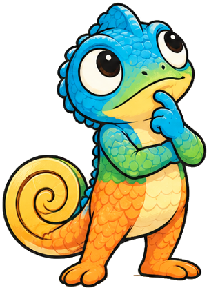

Privacy Policy
Last updated: 17 October 2026
Tiermap ("the app") is made by Mahmoud ElKhlafawi. This policy explains what happens to your data.
Summary
Tiermap does not collect, store on any server, sell or share your personal data. There is no account, no analytics and no tracking.
What stays on your Mac
- API keys you add (App Store Connect
.p8key, Google Play service-account key) are stored only in your Mac's Keychain. - Tiers, targets, links and History are stored in the app's container on your Mac. You can export or delete them at any time.
Who the app talks to
Tiermap connects directly from your Mac to:
- Apple — App Store Connect API, to read and change prices of your apps, using your key.
- Google — Google Play Developer API, Play Developer Reporting API and Google OAuth, to read and change prices of your apps, using your key.
- Apple — App Store (StoreKit), when you buy or restore Tiermap Pro.
These requests go to Apple and Google under your own developer accounts and are covered by their privacy policies. Tiermap's developer never receives them.
Purchases
Tiermap Pro is sold through the App Store. Apple processes the payment; the developer receives no payment details.
Children
Tiermap is a tool for app developers and isn't directed at children.
Changes
Updates to this policy will be posted at this address with a new date.
Contact
Questions: open an issue on GitHub.